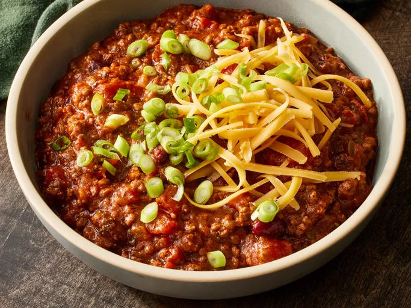

Chili

Description:
This chili con carne recipe is many years in the making, and I have won several awards with it.
I think you'll be pleased with it. You can alter it to your own spice levels to achieve your
perfect chili. Garnish with shredded mozzarella cheese and use corn chips for dipping.
Ingredients:
- 4 tablespoons vegetable oil
- 1 green bell pepper, chopped
- 1 yellow onion, chopped
- 2 ½ pounds lean ground beef
- ⅔ cup red wine
- 2 beef bouillon cubes
- 2 (16 ounce) cans whole peeled tomatoes, chopped, juice reserved
- 1 (12 ounce) can tomato paste
- ...
Steps:
- Heat oil in a large saucepan over medium heat.
- Stir in chopped tomatoes, tomato paste, and garlic.
- Bring to a boil over high heat.
- Stir in kidney beans and hot pepper sauce.
- Whisk flour, cornmeal, and water together in a small bowl until smooth.